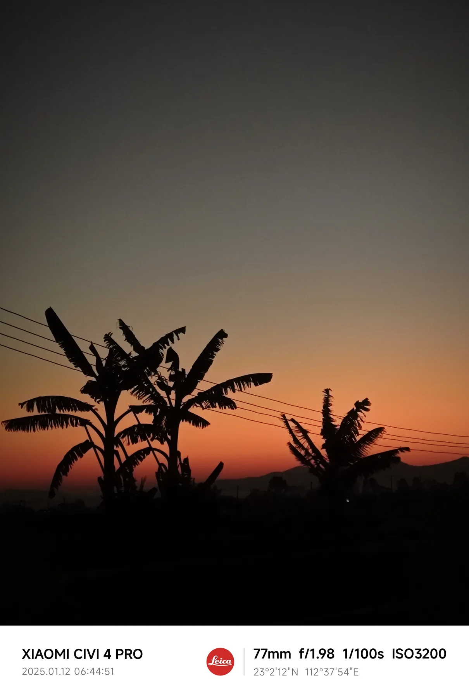

Favorite song
一首我喜欢的歌
先把位置留给旋律。等你给我歌名或音频文件，这里会变成真正能播放的个人歌单。
Chapter 01
一首喜欢的歌旁边，放着过去的照片。它们像一格一格胶片，慢慢把人带回某个下午。
Favorite song
先把位置留给旋律。等你给我歌名或音频文件，这里会变成真正能播放的个人歌单。

点一下拍照
11 张循环Chapter 02
大学拍过的云、路上遇见的光、海边和城市的远处，都放进这一格。它记录的不是天气，而是“我认真看过这个世界”。
Chapter 03
喜欢的明星、亲近的朋友、一起走过大学的人，像一张小小星图。名字可以之后再填，关系先在这里发光。
明星收藏夹
好友关系
Chapter 04
人生不是一场必须齐头并进的赛跑，而是一片万物自由生长的原野。有的人年少有为，有的人大器晚成。快一步，未必能更早抵达你的终点；慢一时，未必就错过了你的风景。

参与电视项目多媒体模块测试，覆盖视频、音频、图片、U 盘识别和用户 UI 等功能，完成缺陷记录、复现、反馈和回归验证。

对熟人大胆炽热，对生人装高冷，从陌生到熟悉只需要一个逗比的眼神；喜欢爬山、散步、各种球类运动；对热爱的事物有用不完的精力和热情。

广东海洋大学应用气象学本科，学习天气预报、Python 气象资料可视化、气象灾害风险评估等课程，参与“三下乡”项目。
Contact
广东深圳 · 18172527728 · kuny_han@163.com